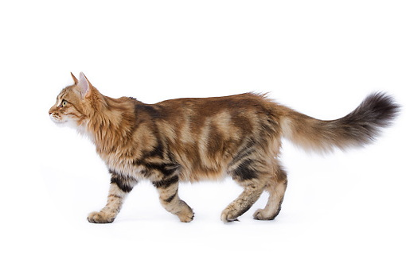

Conclusion

The TMTP
- A library of models for TPTP axiomatizations
- Formats for interpretations
- Functions for efficiently interpreting wrt interpretations
- Tools for examining interpretations
Next Steps
- Immediately, your ideas
- During the fall, basic development
- During the fall, apply for funding
- In the spring, alpha and beta releases
- After CASC-J8, add to the TPTP World